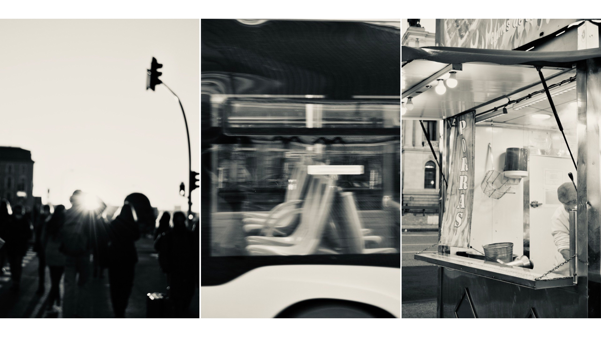
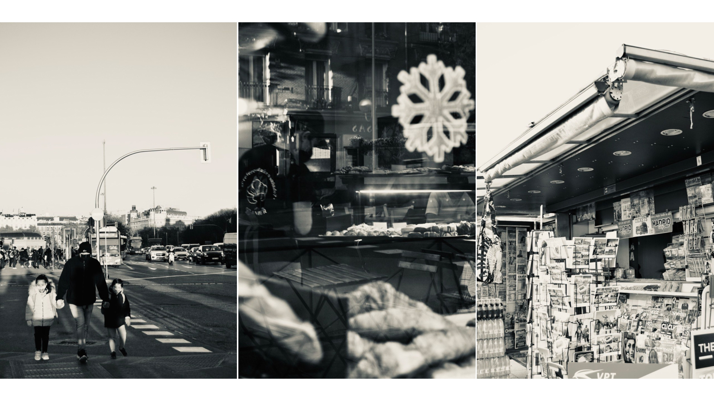
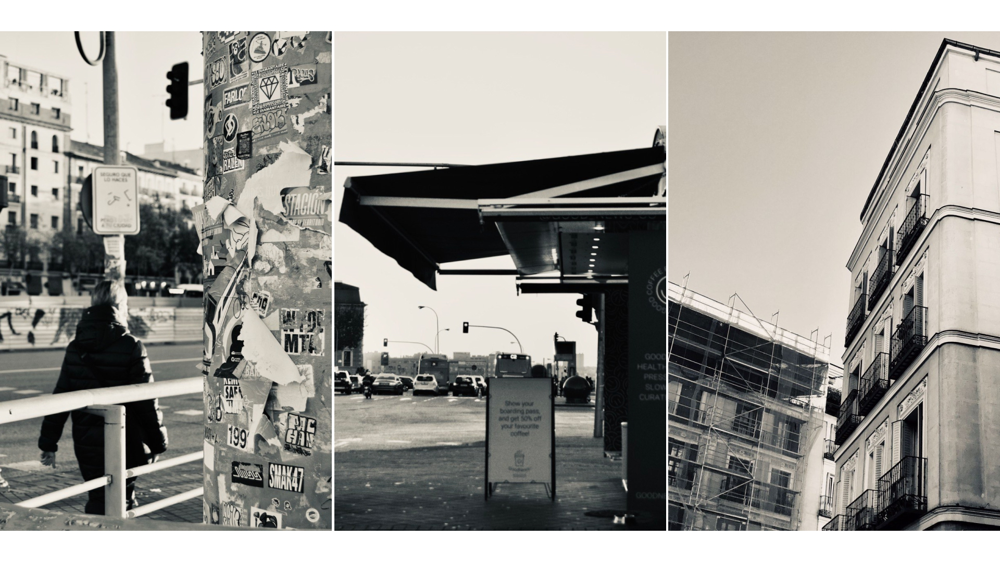
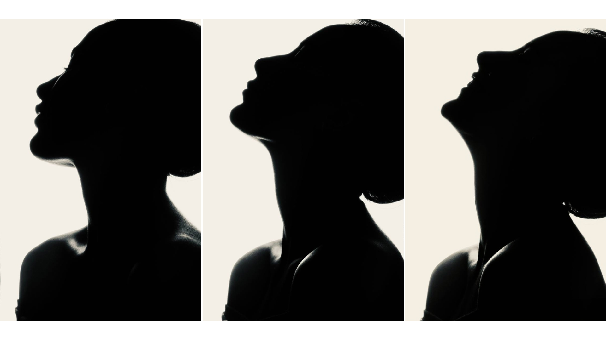
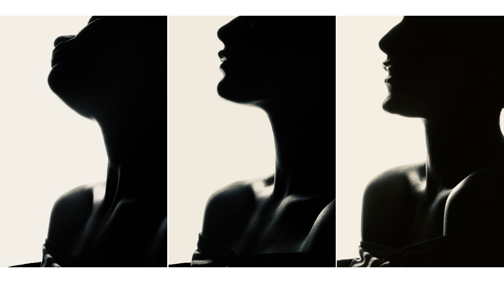

Photography
Photography is a discipline I’m passionate about for its ability to capture unique moments. This section features two projects: one of street photography, taken on a winter morning in Madrid, reflecting the city’s atmosphere, and a series of self-portraits, where I explore the relationship between identity and image.




